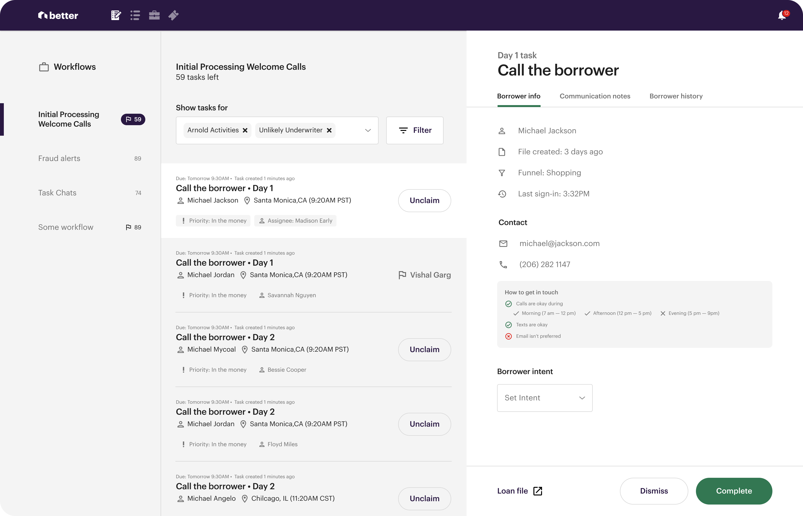

Workflow builder & Tasklist
Taskifying mortgage work by turning a complicated and ambiguous process into an information assembly line.

Research & Opportunity
A basic home purchase loan process looks something like this

It's a complicated process with lots of edge cases and pain points...
Here are some patterns we noticed:
Scattered - Information needed to complete mortgage related work is generally scattered across different forms & products - requiring lots of manual digging & confirming
Expert required- Mortgage work generally require specialized(expensive) workers because the information needed to do work is ambiguous and hard to find.
Long process- Every loan requires multiple rounds careful combing through borrower information to ensure the information is accurate and threshold are met.
Understanding our users
Exploring solutions

We kicked off the project with cross functions leads, created, consolidated, & reconciled ideas. We reacted and refined through a many rounds of designs & testing with the help of figma prototypes and A/B test release.
After a few rounds of prototype testing and arriving at a solution that gets most of the jobs done, I took the design and flushed out edge cases, error handling, and checked for redundancies.
Results
Workflow Builder lets mortgage managers create logic that triggers and assigns activities to the apprepriate team when activities take place on the loan file.
work is created when a set of criteria is met